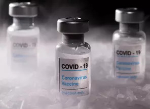
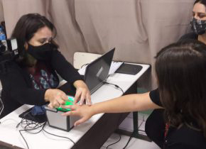

-

Politica
Gestão de Araújo teve preconceito com Venezuela e China, diz Katia Abreu
-

Saúde
Vacina contra Covid da Sanofi e GSK tem resultados positivos em testes da fase 2
-

Educação
Alunos de uma escola em Jundiaí recebem RGs em ação realizada por meio do programa CONVIVA
-
Politica
Ao Conselho de Ética, Daniel Silveira diz se arrepender, mas que STF é 'parcial'
-
Saúde
Painel da Vacina: Brasil vai a 63º no ranking global e é 4º no total de doses
-
Educação
Secretário da Educação participa de encontro com diretores de escolas estaduais em Americana